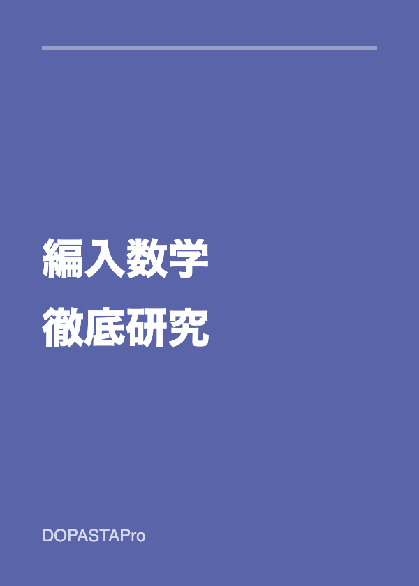
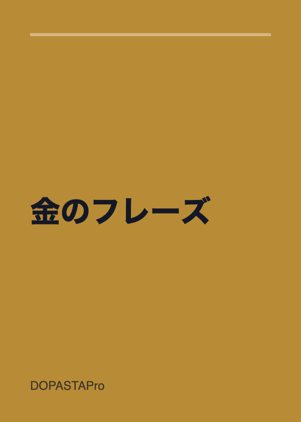
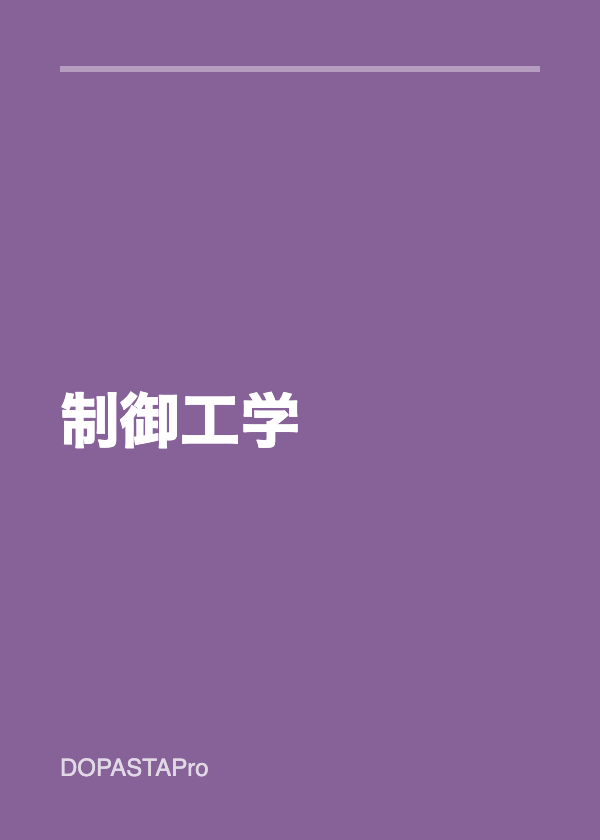

学習タイマーの動作に連動。別のアプリや画面に移っても、学習の計測中は「学習中」です。
FOCUS. RECALL. CONNECT.
Welcome to Your Next-Generation Study Platform.
「やらなきゃ」を「もう少しやりたい」へ
集中も、復習も、やりきった瞬間も。
学びをつなぐ、DOPASTA Pro。
A NEW RHYTHM FOR YOUR STUDYSCROLL TO EXPLORE ↓
NOT JUST A TIMER.
時間を測る、その先へ。
机に向かう。ひとつ覚える。
昨日の自分を、少し超える。
その繰り返しを、楽しめるように。
DOPASTA Proは、集中と復習をひとつにつなぐ学習SNS。
自分のペースで学び、積み重ねを確かめながら、次の一歩へ。
YOUR BOOKS. YOUR PACE.
今日の一冊から、
始めよう。
「教材」から、いま取り組む一冊を選んで勉強へ。編入・TOEIC・一般科目・専門科目のカテゴリで、自分の本棚を整理できます。
- 自分だけの教材も追加できる
- 教材名・表紙画像・色をカスタマイズ
- 同じ教材で学習中の人数も確認
独自教材で学んだ記録も、投稿先には教材名が伝わります。表紙や本棚の設定は使用するブラウザ内に保存します。
PICK YOUR NEXT SESSION編入 TOEIC 専門科目
編入TOEIC一般科目専門科目



アプリに用意している表紙の一例です。
01 — FOCUS
集中のかたちは、
ひとつじゃない。
25分だけ、深く。あるいは、気のすむまで。ポモドーロ・ストップウォッチ・タイマーから、その日の自分に合うリズムを。
- ポモドーロは25分／5分・50分／10分
- タイマーは5・15・25・30・45・60分
- 時間を決めずに学ぶストップウォッチ
朝霧から夜の小雨まで、背景も時刻に合わせて5段階で変化。学習と休憩で風景が切り替わります。実際の天気に連動する機能ではありません。
FIND YOUR RHYTHM
ポモドーロストップウォッチタイマー
FOCUS TIME25:00● 環境音 未測定
表示イメージ。紹介サイトでは計測しません。
flowstate MODE
周りを黒くして、タイマーの円・時間・環境音表示だけを残す。余計な情報を視界から外して、ひとつのことに入り込みましょう。
ELAPSED TIME12:34● 環境音 未測定
表示イメージ。画面を暗くする体験ができます。
計測は、そのまま。モードを切り替えても、タイマーや環境音の測定は継続します。
操作したいときだけ。タップ・マウス移動で操作を表示。学習終了時は、自動で振り返りへ戻ります。
02 — RECALL
その手応えを、
次の復習につなぐ。
問題ひとつに、答えひとつ。答えを確認したら「わかる・ぎりわかる・あやしい・わからない」の4段階で評価。学習終了時もフラッシュカードも、同じ手軽さです。
- 問題と答えの2列CSV・手動入力に対応
- 復習期限が来た問題を優先して出題
- 評価と履歴に合わせて次回の復習を調整
SM-2を参考にした間隔反復です。初回は評価により10分後〜6日後へ。記憶の定着度そのものを測定する機能ではありません。
YOUR QUIZ COLLECTION体験用サンプル
「集中する」を英語で？
focus
どのくらい思い出せましたか？
答えを見て、手応えを選んでみましょう。
体験用のため、復習予定・スコア・学習記録は保存しません。
EVERY SESSION COUNTS.
やりきった。
その瞬間が、次の力に。
学習の終わりを、ことば・光・紙吹雪と音で祝福。
STUDY ROYALEやレベルアップ、季節限定の演出も。
毎回違う達成の瞬間が、次の一歩を後押しします。
クリスマスは日本時間11月1日〜12月25日、新年は1月1日〜15日の限定演出も抽選に加わります。
音を止める・演出をスキップする操作にも対応しています。
集中度は中断回数・自己評価・任意の環境音評価から算出する、アプリ独自の目安です。スコアと環境音チェックについて ↗
03 — CONNECT
ひとりの頑張りが、
みんなの刺激に。
タイムラインからSTUDY ARENAへ。チーム内・チーム対抗・全体の3つの舞台で、今日・今週・今月の積み重ねを比べられます。
- DAILY・WEEKLY・MONTHLYのランキング
- 学習時間と集中度を掛け合わせたスコアで対戦
- チーム内・チーム対抗の日間／週間の順位変動をお知らせ
全体ランキングは全体公開の記録を集計。チーム内・チーム対抗は、現在の所属メンバーの記録が対象です。
STUDY ARENA
日本時間で集計DAILY BATTLE
今日- 1位1時間15分0秒太郎
- 2位55分0秒ひなたオンライン
- 3位35分0秒ゆいオフライン
WEEKLY BATTLE
今週- 1位6時間30分0秒太郎
- 2位5時間35分0秒ひなたオンライン
- 3位4時間45分0秒ゆいオフライン
MONTHLY BATTLE
今月- 1位21時間0分0秒太郎
- 2位19時間0分0秒ひなたオンライン
- 3位16時間25分0秒ゆいオフライン
DAILY BATTLE
今日- 1位1時間15分0秒太郎
- 2位55分0秒ひなたオンライン
- 3位35分0秒ゆいオフライン
WEEKLY BATTLE
今週- 1位6時間30分0秒太郎
- 2位5時間35分0秒ひなたオンライン
- 3位4時間45分0秒ゆいオフライン
MONTHLY BATTLE
今月- 1位21時間0分0秒太郎
- 2位19時間0分0秒ひなたオンライン
- 3位16時間25分0秒ゆいオフライン
DAILY BATTLE
今日- 1位2時間45分0秒AURORA
- 2位2時間15分0秒ORBIT1人がオンライン
- 3位1時間45分0秒NOVAオフライン
WEEKLY BATTLE
今週- 1位18時間5分0秒AURORA
- 2位15時間0分0秒ORBIT1人がオンライン
- 3位12時間25分0秒NOVAオフライン
MONTHLY BATTLE
今月- 1位56時間30分0秒AURORA
- 2位50時間0分0秒ORBIT1人がオンライン
- 3位44時間0分0秒NOVAオフライン
DAILY BATTLE
今日- 1位1時間25分0秒ひなたオンライン
- 2位1時間15分0秒太郎
- 3位35分0秒ゆいオフライン
WEEKLY BATTLE
今週- 1位7時間0分0秒ひなたオンライン
- 2位6時間30分0秒太郎
- 3位4時間45分0秒ゆいオフライン
MONTHLY BATTLE
今月- 1位22時間0分0秒ひなたオンライン
- 2位21時間0分0秒太郎
- 3位16時間25分0秒ゆいオフライン
学習タイマーを一時停止している状態。再開すると、緑の「学習中」に戻ります。
学習を始める前や終えたあと、アプリ画面を表示している状態。青い点でオンラインを伝えます。
学習中・一時停止中ではなく、アプリ画面も表示していない状態です。
SEE YOUR PROGRESS.
積み重ねを、
見える自信に。
今日・今週・今月・累計を、棒グラフで振り返る。カテゴリを複数選んで、見たい学びだけに絞り込めます。仲間のプロフィールから、その人の公開範囲でレポートを見ることもできます。
学習スコアの考え方学習時間 × 集中度
たとえば25分 × 80%なら、20分相当。
タイムライン・レポート・対戦は、この換算時間が基本です。1秒未満は記録ごとに切り捨て、集中度未計測の記録は実測時間を使います。集中度は実際の注意力を測るものではありません。
YOUR REPORT
今日今週今月累計
今週の学習時間
日別3時間45分0秒
編入TOEIC一般科目専門科目
学習記録はサーバーに保存して集計します。
STUDY TOGETHER.
学びは、ひとりで閉じない。
頑張りを、届ける。
「全体」「フォロー中」で学習記録を切り替え。教材の表紙・名前・学習スコアがひと目でわかり、いいねやコメントで反応できます。
投稿前に教材を訂正したり、ひとことを添えたり。投稿後の編集、自分の投稿・コメントの削除、コメントへのいいねにも対応しています。
学びの続きを、会話に。
相互フォローのフレンドと個人チャット。チームに参加すれば、メンバーみんなで話せます。
メッセージを長押しして、リアクションやリプライ。右上のチャットアイコンから、会話に集中できる専用画面へ。
名前から、つながる。
気になる人の名前やアイコンをタップしてプロフィールへ。フォローリクエストを送り、QRコードでもフレンドを増やせます。
プロフィール画像・表示名を編集。チームの作成と招待、相互フォロー相手のフォロー・フォロワー一覧の確認もできます。
YOUR FRIENDS. ONE TAP AWAY.
仲間の「始めた」が、
自分の合図になる。
フレンド・同じチームの学習開始、フォローリクエスト、個人とチームのチャット新着を、このデバイスへプッシュ通知。アプリを閉じていても、きっかけを受け取れます。
- チャット通知は送信者と本文の一部をプレビュー
- ベルは学習開始・申請・招待などのお知らせ
- チャットは専用アイコンの未読件数で確認
プロフィールの「このデバイスの通知」で有効にします。iPhone・iPadではSafariからホーム画面に追加し、DPアイコンから開いて設定。対応ブラウザ・通知許可が必要で、端末設定や通信状況により届き方は異なります。
STAY IN THE LOOP
DOPASTAPro
フレンドが学習を始めました。
フォローリクエスト
新しい仲間から、学びのつながりが届く。
チームチャット
「今日も一緒に頑張ろう！」
通知内容のイメージです。チーム招待はアプリ内で確認できます。ベルを開くと、その時点のお知らせは確認済みになります。
MAKE IT YOUR ROUTINE.
はじめの一歩は、シンプル。
- 01
アカウントをつくる
ユーザーネーム・名前・パスワードで登録。メールアドレスは不要です。スマホではホーム画面にDPアイコンを追加して使えます。
- 02
教材を選んで、集中
「教材」で一冊を選び、計測方式を決めてスタート。好きな教材も追加できます。もっと没入したいときはflowstate MODEへ。
- 03
振り返って、記録
答えを確認し、手応えを4段階で評価。集中度を5段階で自己評価し、教材・ひとこと・公開範囲を確認して記録します。
自分の問題集は「勉強する」のYOUR QUIZ COLLECTIONから。問題と答えを手動、または2列のCSVで追加できます。
YOUR SPACE. YOUR FOCUS.
集中の基準は、
あなたのいる場所から。
静かな部屋も、いつものカフェも。完全な静寂だけが、集中の正解とは限りません。
環境音チェックは、その日の学習場所に合わせた振り返りをサポートします。
はじめに基準を測る
マイクを許可すると、最初の30秒の音量から基準値を測定。落ち着いて勉強を始められる状態で測ります。場所を変えたら、新しい学習セッションで測り直せます。
音の変化を見える化
基準との差を「最適・普通・うるさすぎ」で表示。標準の判定幅は、基準から＋5 dBまでが最適、＋15 dBまでが普通、それ以上がうるさすぎです。
● 最適● 普通● うるさすぎ
変化をスコアに反映
会話などで周囲の音が大きくなった場合、基準＋5 dBを超えた音量の平均と、大きな音が続いた割合に応じて環境音の評価を減点します。会話の内容を判別する機能ではありません。
集中度スコアは、0〜100の振り返り。
一時停止の回数による継続度と、学習終了時の自己評価に、任意の環境音評価を組み合わせます。環境音の比重は最大20%。測定しない場合や測定時間が足りない場合は、環境音を評価に含めません。
音声は録音・送信せず、音量の集計値だけを利用します。このスコアや「最適」の表示はアプリ独自の目安で、実際の集中力を測定・保証するものではありません。
QUESTIONS & ANSWERS
よくある質問
どんなアプリですか？
教材選び、タイマー、flowstate MODE、フラッシュカード、学習レポート、タイムライン、チーム対戦をひとつにした学習SNSです。メール不要のアカウントで利用できます。
スマートフォンでも使えますか？
スマートフォン・タブレット・PCのブラウザに対応した画面です。スマホは下部、PCは左側のタブで移動します。iPhoneのSafariでは「ホーム画面に追加」でDPアイコンから起動できます。スリープ中やバックグラウンドでのアラーム音は、端末やOSの制限により保証できません。
学習データはどこに保存されますか？
アカウント、プロフィール画像、学習記録、フレンド関係、チャットはサーバーに保存します。ログイン時のレポートもサーバーの記録から集計します。教材一覧・表紙のカスタマイズ、問題集・復習予定、自己紹介などは使用するブラウザ内に保存します。ブラウザ内のデータは、サイトデータを削除すると消え、ほかの端末へ自動同期しません。
自分の教材や問題を登録できますか？
はい。「教材」で教材名・カテゴリ・表紙画像・色を設定できます。「勉強する」のYOUR QUIZ COLLECTIONでは、問題と答えを手動または2列CSVで登録できます。不正解の選択肢を用意する必要はありません。登録問題はフラッシュカードと学習終了時の復習で共有します。
「学習中」と「オンライン」は何が違いますか？
緑の「学習中」は学習タイマーの動作、青の「オンライン」は計測していないときのアプリ画面の表示に連動します。どちらにも当てはまらないときは「オフライン」です。端末の電源や本人の行動を直接確認するものではなく、通信状況によって反映が遅れる場合があります。
チーム対戦やチャットはもう使えますか？
はい。アカウントを作成すると利用できます。個人チャットは相互フォローのフレンド同士、チームチャットは現在のチームメンバー同士で使えます。STUDY ARENAはチーム内・チーム対抗・全体の日間・週間・月間ランキングに対応。全体ランキングは、全体公開の学習記録が対象です。
学習時間と学習スコアはどう違いますか？
学習スコアは「実測の学習時間×集中度÷100」で換算した時間です。たとえば25分の学習で集中度80%なら20分相当。タイムライン・レポート・対戦はこの値を基本に表示・集計します。集中度は一時停止回数・自己評価・任意の環境音評価によるアプリ独自の目安で、実際の注意力を測定するものではありません。
通知はどこから設定しますか？
プロフィールの「このデバイスの通知」から許可します。iPhone・iPadではSafariからホーム画面に追加し、DPアイコンから開いて設定してください。学習開始通知はフレンド・同じチームの人に限定。フォローリクエスト、個人・チームチャットの新着も対象です。チャット通知には本文の一部が表示されます。チーム招待はアプリ内で確認できます。
マイクは必ず必要ですか？
環境音の測定は任意です。許可した場合は、はじめの30秒で落ち着いて勉強できる環境の基準を測ります。音声は録音・送信せず、音量の集計値だけを利用します。測定しない場合や測定時間が不足した場合は、環境音を集中度の計算に含めません。
ユーザーネームは後から変更できますか？
はい。プロフィールの「アカウント」で、現在のパスワードを使って変更できます。フレンド・チャット・学習記録は引き継ぎます。メールでのパスワード再設定には対応していないため、ブラウザのパスワード管理機能などで保管してください。パスワードはサーバーにハッシュ化して保存します。